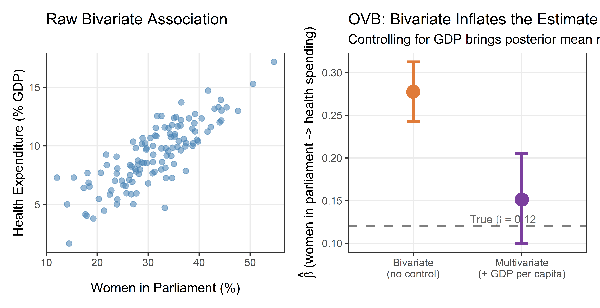
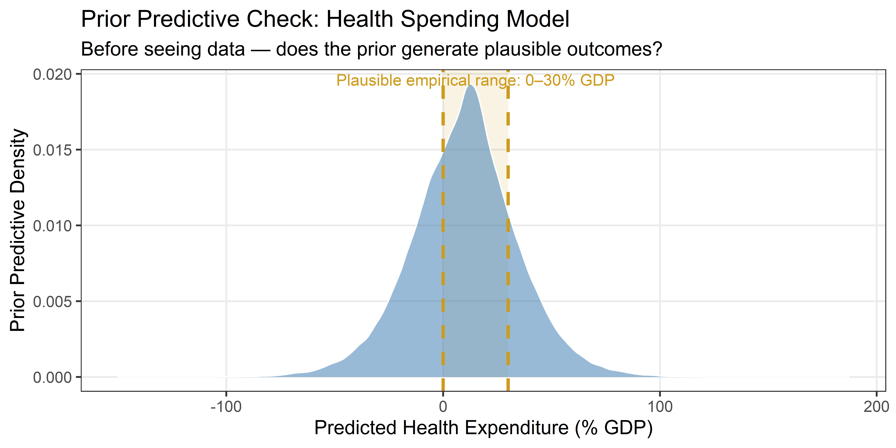
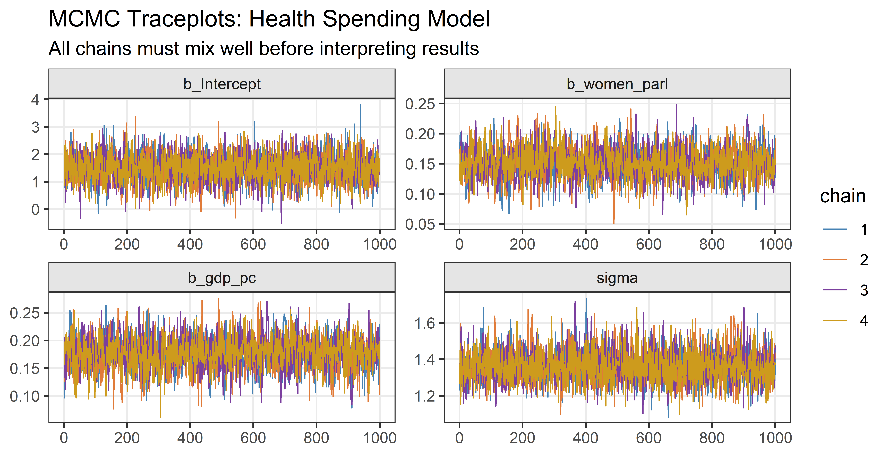
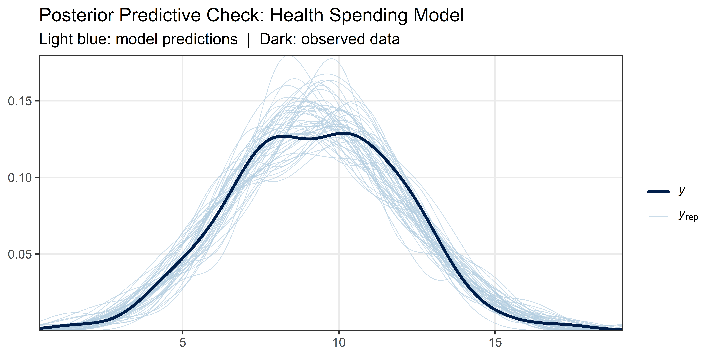
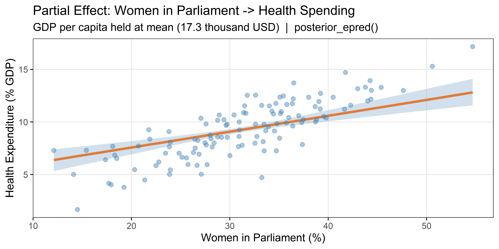
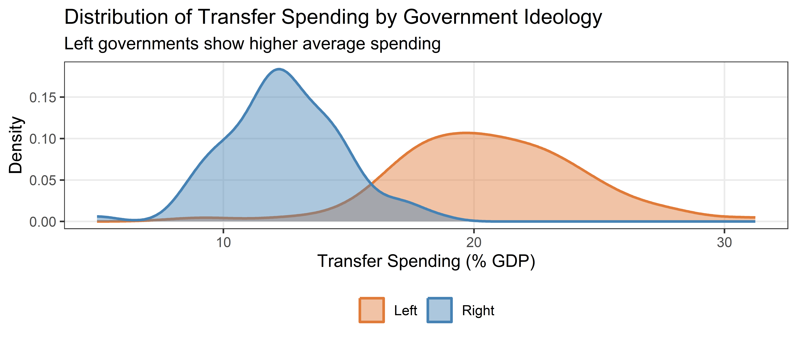
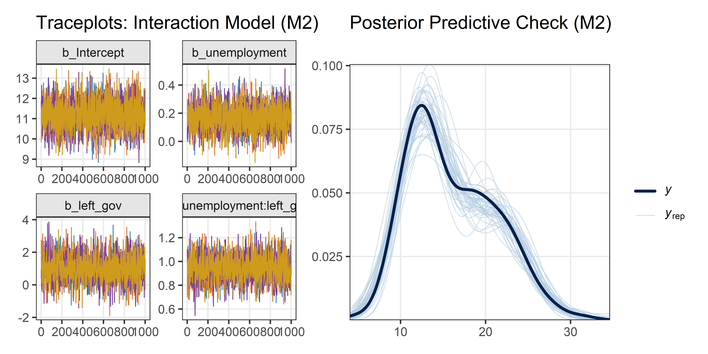
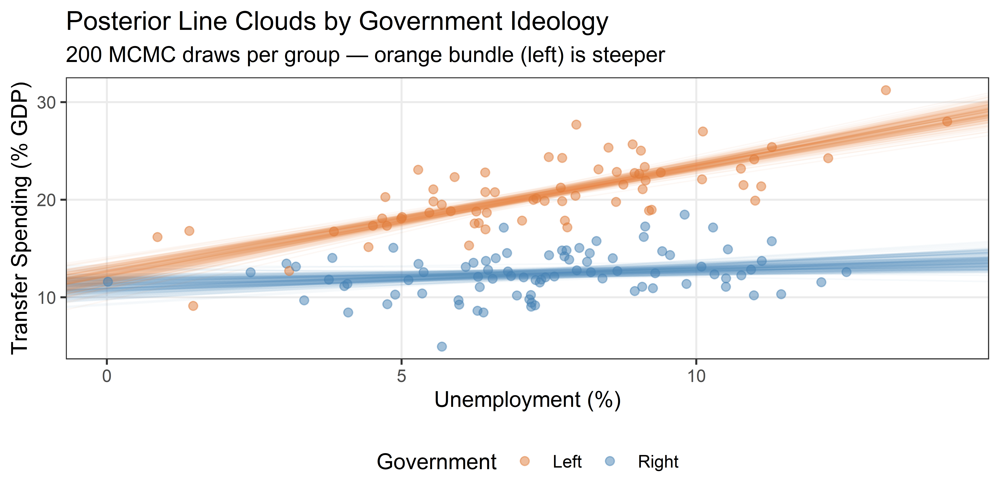

start_time <- Sys.time() # used to measure execution time at the end
library(tidyverse) # data manipulation and ggplot2
library(brms) # Bayesian regression via Stan
library(bayesplot) # MCMC diagnostic plots
library(patchwork) # composing multi-panel figures
# Shared colour palette — reused in every plot so figures look consistent
col_1 <- "steelblue"
col_2 <- "#E07B39"
col_3 <- "#7B3F9E"
col_4 <- "goldenrod3"
chain_cols <- c(col_1, col_2, col_3, col_4) # one colour per MCMC chainWeek 9 Lab: Multivariate Regression and Interactions
Applications from the lecture — work through the code and check that it runs
Setup
Before running any analysis, we load the packages we need and define a few shared colour constants that keep plots visually consistent. brms fits Bayesian regression models via Stan; bayesplot produces MCMC diagnostics; patchwork assembles multi-panel figures.
Data-Generating Processes
Both applications in this notebook use synthetic (simulated) datasets. Working with synthetic data is pedagogically powerful: we know the true parameter values, so we can check whether our models recover them. This is something you can almost never do with real data.
Dataset 1: Women in Parliament → Health Spending
The research question is: Does the share of women in parliament increase public health expenditure?
The key complication is confounding: wealthier countries simultaneously have more women in parliament and spend more on health. Failing to account for GDP per capita will cause us to over-estimate the legislative representation effect.
The true data-generating process (DGP) is:
gdp_pc~ Normal(18, 7) — GDP per capita in thousands of USD (PPP)women_parl= 15 + 0.9 ×gdp_pc+ noise — share of parliament seats held by women (%)health_spend= 2 + 0.20 ×gdp_pc+ 0.12 ×women_parl+ noise — health expenditure (% GDP)
The true coefficient we want to recover is β_women = 0.12. Because GDP drives both women’s representation and health spending, a bivariate model will produce an estimate well above 0.12 — that excess is omitted variable bias (OVB).
Code
set.seed(2026) # reproducibility: same data every time
n1 <- 120 # 120 synthetic country-years
# Simulate the confounder first, then the two outcome variables
gdp_pc <- rnorm(n1, mean = 18, sd = 7)
women_parl <- 15 + 0.9 * gdp_pc + rnorm(n1, 0, 5)
health_spend <- 2 + 0.2 * gdp_pc + 0.12 * women_parl + rnorm(n1, 0, 1.5)
df_controls <- tibble(gdp_pc, women_parl, health_spend)We also pre-fit two brms models here — the bivariate model (no control) and the multivariate model (controlling for GDP) — so they are available for the OVB comparison plot and the LOO comparison later. Fitting takes a moment; cache: true in the slide deck means you will only wait once per machine.
Code
# Bivariate model: health spending ~ women in parliament only
# This model omits GDP, so it will overestimate β_women
fit_controls_biv <- brm(
health_spend ~ women_parl,
data = df_controls,
prior = c(
prior(normal(10, 5), class = "Intercept"), # baseline ~10% GDP
prior(normal(0, 0.5), class = "b"), # weak: ±1.5pp per %
prior(exponential(1), class = "sigma") # residual SD < 5 almost certainly
),
chains = 4,
iter = 2000,
warmup = 1000,
seed = 2026
)Code
# Multivariate model: health spending ~ women in parliament + GDP per capita
# Including GDP closes the back-door path and removes the OVB
fit_controls <- brm(
health_spend ~ women_parl + gdp_pc,
data = df_controls,
prior = c(
prior(normal(10, 5), class = "Intercept"),
prior(normal(0, 0.5), class = "b", coef = "women_parl"), # ±1.5pp per %
prior(normal(0, 1), class = "b", coef = "gdp_pc"), # ±3pp per $1k
prior(exponential(1), class = "sigma")
),
chains = 4,
iter = 2000,
warmup = 1000,
seed = 2026
)Dataset 2: Unemployment × Government Ideology → Transfer Spending
The research question is: Does the effect of unemployment on transfer spending depend on government ideology?
The partisan theory of the welfare state predicts that left-wing governments respond more aggressively to rising unemployment by raising social transfers. Right-wing governments are more fiscally restrained. This is a claim about effect heterogeneity — the slope of the unemployment–spending relationship is steeper under left governments.
The true DGP is:
unemployment~ Normal(7.5, 2.5) — unemployment rate (%)left_gov~ Bernoulli(0.5) — 0 = right government, 1 = left governmenttransfer_spend= 10 + 0.3 ×unemployment+ 2 ×left_gov- 0.9 × (
unemployment×left_gov) + noise — transfer spending (% GDP)
- 0.9 × (
Key quantities to recover:
| Government | Intercept | Unemployment slope |
|---|---|---|
| Right (left_gov = 0) | 10 | 0.3 |
| Left (left_gov = 1) | 12 | 0.3 + 0.9 = 1.2 |
The interaction coefficient β₃ = 0.9 captures how much steeper the left slope is relative to the right slope.
Code
set.seed(42)
n2 <- 150 # 150 synthetic government-years
unemployment <- rnorm(n2, mean = 7.5, sd = 2.5)
left_gov <- rbinom(n2, 1, prob = 0.5) # coin flip: equal left/right share
transfer_spend <- 10 +
0.3 * unemployment +
2 * left_gov +
0.9 * unemployment * left_gov + # the interaction: slope shifts up for left govts
rnorm(n2, 0, 2.5)
df_interact <- tibble(unemployment, left_gov, transfer_spend) |>
mutate(government = if_else(left_gov == 1, "Left", "Right"))Part II: Application I — Multivariate brms Model
Step 1: Estimand
Before writing any code, we state precisely what we are trying to estimate. Drawing a DAG before analysis keeps this honest: the estimand follows from the causal graph, not from what the model happens to produce.
Our DAG (presented in the lecture) shows GDP per capita as a confounder — it has causal arrows into both women’s parliamentary representation and health spending. A confounder opens a “back-door path” that conflates the association we care about with the spurious GDP-driven correlation. Conditioning on GDP per capita — including it as a predictor — closes that path.
Estimand: the partial association between women’s parliamentary representation and public health expenditure, adjusting for GDP per capita.
Under the assumption that GDP is the only relevant confounder (the adjustment set is sufficient), this partial association can be interpreted causally. That assumption is substantive, not statistical — the data cannot verify it.
Step 2: Data Summary and OVB Visualisation
The left panel below shows the raw bivariate scatter: there is a positive trend, but it conflates the legislative effect with the confounding from GDP.
The right panel shows the OVB in action. We plot the posterior mean and 95% credible interval for the women_parl coefficient from both pre-fit models. The bivariate estimate (orange) sits well above the true DGP value of 0.12. The multivariate estimate (purple), which controls for GDP, recovers the true value closely. The gap between the two posterior means is the omitted variable bias.
Code
p_raw <- df_controls |>
ggplot(aes(x = women_parl, y = health_spend)) +
geom_point(colour = col_1, alpha = 0.55, size = 2) +
theme_bw() +
theme(panel.grid.minor = element_blank()) +
labs(
x = "Women in Parliament (%)",
y = "Health Expenditure (% GDP)",
title = "Raw Bivariate Association"
)
# Extract posterior mean and 95% CI for the women_parl coefficient from both models
post_biv <- posterior_summary(fit_controls_biv)["b_women_parl", ]
post_multi <- posterior_summary(fit_controls)["b_women_parl", ]
coef_df <- tibble(
Model = factor(
c("Bivariate\n(no control)", "Multivariate\n(+ GDP per capita)"),
levels = c("Bivariate\n(no control)", "Multivariate\n(+ GDP per capita)")
),
Estimate = c(post_biv["Estimate"], post_multi["Estimate"]),
lo = c(post_biv["Q2.5"], post_multi["Q2.5"]),
hi = c(post_biv["Q97.5"], post_multi["Q97.5"])
)
p_coef <- coef_df |>
ggplot(aes(x = Model, y = Estimate)) +
geom_hline(
yintercept = 0.12, colour = "gray50", linetype = "dashed", linewidth = 0.9
) +
geom_errorbar(aes(ymin = lo, ymax = hi, colour = Model), width = 0.12, linewidth = 1.1) +
geom_point(aes(colour = Model), size = 5) +
scale_colour_manual(values = c(col_2, col_3), guide = "none") +
annotate(
"text", x = 1.52, y = 0.127, size = 3.3, colour = "gray40",
label = expression(paste("True ", beta, " = 0.12")), hjust = 0
) +
theme_bw() +
theme(panel.grid.minor = element_blank()) +
labs(
x = NULL,
y = expression(hat(beta) ~ "(women in parliament -> health spending)"),
title = "OVB: Bivariate Inflates the Estimate",
subtitle = "Controlling for GDP brings posterior mean near true DGP value"
)
p_raw | p_coef
Step 3: Formal Model Specification
We write out the full statistical model — likelihood and priors — before touching brms. This makes our assumptions explicit and contestable.
Likelihood (unchanged from Week 8 — still Gaussian):
\[ Y_i \sim \text{Normal}(\mu_i,\, \sigma) \]
\[ \mu_i = \alpha + \beta_X X_i + \beta_Z Z_i \]
where \(X\) = women in parliament (%), \(Z\) = GDP per capita (thousands USD, PPP).
Priors (one per unknown parameter — all four must be justified):
\[ \alpha \sim \text{Normal}(10, 5) \qquad \beta_X \sim \text{Normal}(0, 0.5) \]
\[ \beta_Z \sim \text{Normal}(0, 1) \qquad \sigma \sim \text{Exponential}(1) \]
The prior on \(\beta_X\) says: before seeing data, a 1 pp increase in women’s representation is associated with a change of somewhere between −1.5 and +1.5 pp in health spending (the Normal(0, 0.5) range at ±3σ is [−1.5, 1.5]). This rules out extreme effects while remaining consistent with the empirical literature.
Step 4: Prior Predictive Check
A prior predictive check asks: if we sample parameter values from the priors and generate data, do the simulated outcomes look like real-world health spending? Public health expenditure as a share of GDP is typically between 0% and 30%. Prior-predicted values far outside this range would signal that our priors are miscalibrated.
Code
set.seed(2026)
n_pp <- 2000
# For each of the 2000 draws, compute the linear predictor at every observation
# and add Gaussian noise with the drawn σ.
# rowwise() + mutate(y_sim = list(...)) creates one simulated dataset per draw.
prior_pred_controls <- tibble(
b0 = rnorm(n_pp, 10, 5), # intercept draws
b_wp = rnorm(n_pp, 0, 0.5), # women_parl slope draws
b_gdp = rnorm(n_pp, 0, 1), # gdp_pc slope draws
sigma = rexp(n_pp, 1) # residual SD draws
) |>
rowwise() |>
mutate(
y_sim = list(
b0 +
b_wp * df_controls$women_parl +
b_gdp * df_controls$gdp_pc +
rnorm(nrow(df_controls), 0, sigma)
)
) |>
unnest(y_sim) |>
ungroup()
prior_pred_controls |>
ggplot(aes(x = y_sim)) +
annotate(
"rect", xmin = 0, xmax = 30, ymin = 0, ymax = Inf,
fill = col_4, alpha = 0.12
) +
geom_density(fill = col_1, alpha = 0.55, color = "white", linewidth = 0.4) +
geom_vline(
xintercept = c(0, 30), color = col_4, linetype = "dashed", linewidth = 0.9
) +
annotate(
"text", x = 15, y = Inf, vjust = 1.4, size = 3.2, color = col_4,
label = "Plausible empirical range: 0–30% GDP"
) +
theme_bw() +
theme(panel.grid.minor = element_blank()) +
labs(
x = "Predicted Health Expenditure (% GDP)",
y = "Prior Predictive Density",
title = "Prior Predictive Check: Health Spending Model",
subtitle = "Before seeing data — does the prior generate plausible outcomes?"
)
Step 5: Fit the Model with brms
The brm() call mirrors the formal model written in Step 3. Note that we specify a separate prior() for each coefficient using coef =. This is more precise than applying one flat prior to all slopes, and it documents our assumptions in the code itself.
brms translates the model to Stan (C++), compiles it, and samples 4 parallel Markov chains. With iter = 2000 and warmup = 1000, each chain contributes 1,000 post-warmup draws, giving 4,000 total posterior samples of (α, β_X, β_Z, σ).
# This chunk shows the fitting code for reference.
# The model was already fitted above (fit-controls-multi) and is available as fit_controls.
fit_controls <- brm(
health_spend ~ women_parl + gdp_pc, # outcome ~ main predictor + control
data = df_controls,
prior = c(
prior(normal(10, 5), class = "Intercept"), # baseline spending ~10% GDP
prior(normal(0, 0.5), class = "b", coef = "women_parl"), # weak: ±1.5pp per %
prior(normal(0, 1), class = "b", coef = "gdp_pc"), # ±3pp per $1k GDP
prior(exponential(1), class = "sigma") # residual SD < 5 almost certainly
),
chains = 4,
iter = 2000, # 1000 warmup + 1000 sampling draws per chain
warmup = 1000,
seed = 2026 # reproducibility
)Step 6a: MCMC Diagnostics — Traceplots
Before interpreting any results, we must confirm that MCMC has converged. Three things to check:
- Rhat < 1.01 for every parameter: the chains have mixed — all four explored the same region of parameter space.
- Bulk_ESS and Tail_ESS > 1,000 for every parameter: we have enough effective samples to trust posterior summaries and credible intervals.
- Traceplots look like “hairy caterpillars”: each chain wanders randomly around the same range with no trends, drifts, or stuck periods.
If any diagnostic fails, stop and investigate before interpreting results.
Code
mcmc_trace(
fit_controls,
pars = c("b_Intercept", "b_women_parl", "b_gdp_pc", "sigma"),
facet_args = list(ncol = 2)
) +
scale_color_manual(values = chain_cols) +
theme_bw() +
theme(
panel.grid.minor = element_blank(),
strip.background = element_rect(fill = "gray90")
) +
labs(
title = "MCMC Traceplots: Health Spending Model",
subtitle = "All chains must mix well before interpreting results"
)
Step 6b: Posterior Predictive Check
A posterior predictive check (PPC) asks: do the model’s predictions look like the observed data? pp_check() draws 50 samples from the posterior predictive distribution (light blue lines) and overlays them on the observed outcome distribution (dark blue line). A well-specified model should produce simulated outcome distributions that closely envelope the observed one.
Code
pp_check(fit_controls, ndraws = 50) +
theme_bw() +
theme(panel.grid.minor = element_blank()) +
labs(
title = "Posterior Predictive Check: Health Spending Model",
subtitle = "Light blue: model predictions | Dark: observed data"
)
Step 7: Interpret Results
summary() returns posterior means (Estimate), posterior standard deviations (Est.Error), and 95% credible intervals (l-95% CI / u-95% CI) for each parameter. The Rhat column confirms convergence (should be < 1.01 everywhere) and Bulk_ESS / Tail_ESS confirm adequate effective sample sizes.
Code
summary(fit_controls) Family: gaussian
Links: mu = identity
Formula: health_spend ~ women_parl + gdp_pc
Data: df_controls (Number of observations: 120)
Draws: 4 chains, each with iter = 2000; warmup = 1000; thin = 1;
total post-warmup draws = 4000
Regression Coefficients:
Estimate Est.Error l-95% CI u-95% CI Rhat Bulk_ESS Tail_ESS
Intercept 1.49 0.53 0.43 2.51 1.00 3319 3326
women_parl 0.15 0.03 0.10 0.21 1.00 1830 1997
gdp_pc 0.18 0.03 0.12 0.24 1.00 1800 1888
Further Distributional Parameters:
Estimate Est.Error l-95% CI u-95% CI Rhat Bulk_ESS Tail_ESS
sigma 1.36 0.09 1.20 1.55 1.00 3553 2643
Draws were sampled using sampling(NUTS). For each parameter, Bulk_ESS
and Tail_ESS are effective sample size measures, and Rhat is the potential
scale reduction factor on split chains (at convergence, Rhat = 1).What to look for:
b_women_parlposterior mean should be near 0.12 (the true DGP value). Compare this to the bivariate estimate (~0.25) — the difference is OVB.b_gdp_pcposterior mean should be near 0.20.sigmashould be near 1.5.
Visualising the Partial Effect
Rather than just reporting the coefficient, we visualise the estimated relationship. We create a prediction grid that varies women_parl across its observed range while holding gdp_pc fixed at its sample mean — this isolates the partial effect of legislative representation.
posterior_epred() returns a matrix of posterior draws of \(E[Y \mid X, Z]\) for each grid row. Taking quantiles across draws gives us the posterior mean and 95% credible interval for the partial effect at each value of women_parl.
Code
# Grid: vary women_parl, hold gdp_pc fixed at mean
grid_controls <- tibble(
women_parl = seq(min(df_controls$women_parl), max(df_controls$women_parl), length.out = 80),
gdp_pc = mean(df_controls$gdp_pc)
)
# posterior_epred returns a draws × grid matrix of E[Y | X, Z] values
epred_mat <- posterior_epred(fit_controls, newdata = grid_controls)
grid_controls <- grid_controls |>
mutate(
lo = apply(epred_mat, 2, quantile, 0.025), # 2.5th percentile across draws
mid = apply(epred_mat, 2, median), # median across draws
hi = apply(epred_mat, 2, quantile, 0.975) # 97.5th percentile across draws
)
df_controls |>
ggplot(aes(x = women_parl, y = health_spend)) +
geom_ribbon(
data = grid_controls,
aes(x = women_parl, ymin = lo, ymax = hi, y = mid),
inherit.aes = FALSE, fill = col_1, alpha = 0.25
) +
geom_line(
data = grid_controls, aes(x = women_parl, y = mid),
inherit.aes = FALSE, color = col_2, linewidth = 1.2
) +
geom_point(color = col_1, alpha = 0.45, size = 1.8) +
theme_bw() +
theme(panel.grid.minor = element_blank()) +
labs(
x = "Women in Parliament (%)",
y = "Health Expenditure (% GDP)",
title = "Partial Effect: Women in Parliament -> Health Spending",
subtitle = paste0(
"GDP per capita held at mean (", round(mean(df_controls$gdp_pc), 1),
" thousand USD) | posterior_epred()"
)
)
Step 8: LOO-IC Model Comparison
Bayesian leave-one-out cross-validation (LOO-IC) estimates how well each model would predict new data — it penalises complexity implicitly. We compare the bivariate model (no GDP control) against the multivariate model.
add_criterion() appends the LOO estimate to each fitted model. loo_compare() ranks models by expected log predictive density (elpd): higher elpd = better predictive accuracy. When |elpd_diff| > 2 × se_diff, the evidence for the better model is substantial.
Code
fit_controls <- add_criterion(fit_controls, "loo")
fit_controls_biv <- add_criterion(fit_controls_biv, "loo")
loo_compare(fit_controls_biv, fit_controls) elpd_diff se_diff
fit_controls 0.0 0.0
fit_controls_biv -15.0 5.1 The multivariate model should dominate: GDP genuinely predicts health spending, so including it improves out-of-sample accuracy.
Remaining limitations to keep in mind:
- GDP may not be the only confounder — country institutional quality, colonial history, and cultural factors might also drive both representation and spending.
- Country-year observations within the same country are likely correlated — a violation of the independence assumption (A5) that Week 12 addresses with multilevel models.
- Linearity is assumed: we should inspect residuals for non-linear patterns.
Part IV: Application II — Interaction brms Model
Step 1: DAG and Estimand
The partisan welfare state story involves two independent causes of transfer spending — unemployment and government ideology — where ideology also moderates the unemployment effect. The DAG has arrows from both Unemployment and Government Ideology into Transfer Spending; the research question concerns the interaction: is the unemployment slope steeper under left governments?
Because this DAG has no confounders (no variable that causes both unemployment and ideology), we do not need a control variable to close a back-door path. The interaction term itself is the quantity of interest.
Estimand 1: \(\partial\mu/\partial X|_{Z=0}\) — unemployment slope under right governments.
Estimand 2: \(\partial\mu/\partial X|_{Z=1}\) — unemployment slope under left governments.
Estimand 3: β₃ — the slope difference; how much more does unemployment associate with spending under left vs. right governments?
Step 2: Data Summary
We start with a quick look at the outcome distribution by ideology group, then examine the joint scatter and a box-plot comparison.
Code
df_interact |>
ggplot(aes(x = transfer_spend, fill = government, colour = government)) +
geom_density(alpha = 0.45, linewidth = 0.8) +
scale_fill_manual(values = c("Left" = col_2, "Right" = col_1)) +
scale_colour_manual(values = c("Left" = col_2, "Right" = col_1)) +
theme_bw() +
theme(panel.grid.minor = element_blank(), legend.position = "bottom") +
labs(
x = "Transfer Spending (% GDP)", y = "Density",
title = "Distribution of Transfer Spending by Government Ideology",
subtitle = "Left governments show higher average spending",
fill = NULL, colour = NULL
)
The scatter below puts unemployment on the x-axis and draws separate OLS lines for each ideology group. If the lines have visibly different slopes, that is preliminary evidence for an interaction. The box-plot facets unemployment into terciles and shows the widening gap between left and right governments as unemployment rises — the visual signature of β₃ > 0.
Code
p_scatter_int <- df_interact |>
ggplot(aes(x = unemployment, y = transfer_spend, color = government)) +
geom_point(alpha = 0.5, size = 1.8) +
geom_smooth(aes(group = government), method = "lm", se = FALSE, linewidth = 1.2) +
scale_color_manual(values = c("Left" = col_2, "Right" = col_1), name = "Government") +
theme_bw() +
theme(panel.grid.minor = element_blank(), legend.position = "bottom") +
labs(
x = "Unemployment (%)", y = "Transfer Spending (% GDP)",
title = "Separate Slopes by Ideology", subtitle = "OLS line per group"
)
df_interact_plot <- df_interact |>
mutate(
unemp_tercile = cut(
unemployment,
breaks = quantile(unemployment, c(0, 1/3, 2/3, 1)),
labels = c("Low\n(~4%)", "Mid\n(~8%)", "High\n(~12%)"),
include.lowest = TRUE
)
)
p_box_int <- df_interact_plot |>
ggplot(aes(x = unemp_tercile, y = transfer_spend, fill = government)) +
geom_boxplot(alpha = 0.7, position = position_dodge(width = 0.75), width = 0.6) +
scale_fill_manual(values = c("Left" = col_2, "Right" = col_1), name = "Government") +
theme_bw() +
theme(panel.grid.minor = element_blank(), legend.position = "bottom") +
labs(
x = "Unemployment Tercile", y = "Transfer Spending (% GDP)",
title = "Gap Widens with Unemployment", subtitle = "Signature of a positive interaction term"
)
p_scatter_int | p_box_int
Step 3: Formal Model Specification
The interaction model augments the additive model with a product term:
\[ Y_i \sim \text{Normal}(\mu_i,\, \sigma) \]
\[ \mu_i = \alpha + \beta_1 U_i + \beta_2 G_i + \beta_3 (U_i \cdot G_i) \]
where \(U\) = unemployment (%), \(G\) = left government (0/1).
The two conditional marginal effects are now functions of the moderator:
\[ \frac{\partial\mu}{\partial U} = \beta_1 + \beta_3 G \qquad \frac{\partial\mu}{\partial G} = \beta_2 + \beta_3 U \]
Priors:
\[ \alpha \sim \text{Normal}(12, 5) \qquad \beta_1, \beta_2 \sim \text{Normal}(0, 1) \qquad \beta_3 \sim \text{Normal}(0, 1) \qquad \sigma \sim \text{Exponential}(0.5) \]
The prior for β₃ is centred at zero — our prior expectation is no moderation. The data will update this. This is appropriately humble: we should not encode strong prior beliefs about the direction of an interaction before seeing the evidence.
We fit two competing models:
- M1 (no interaction): assumes the unemployment slope is the same for all governments — a testable restriction.
- M2 (interaction): relaxes this. If M2 fits substantially better via LOO-IC, we have evidence that the restriction is false.
Step 4: Prior Predictive Check
For the interaction model, we draw regression lines from the joint prior — one bundle per ideology group. The check asks: does the prior allow a wide enough range of slopes, including no moderation (similar slopes), strong moderation (very different slopes), and implausible configurations (e.g., enormous negative slopes)?
Code
set.seed(42)
n_pp2 <- 150
unemp_seq <- seq(1.5, 14, length.out = 60)
prior_lines_int <- tibble(
sim = 1:n_pp2,
b0 = rnorm(n_pp2, 12, 5), # intercept draws
b_u = rnorm(n_pp2, 0, 1), # unemployment slope draws
b_g = rnorm(n_pp2, 0, 1), # ideology main effect draws
b_int = rnorm(n_pp2, 0, 1) # interaction term draws
) |>
expand_grid(unemployment = unemp_seq, left_gov = c(0L, 1L)) |>
mutate(
y_hat = b0 + b_u * unemployment + b_g * left_gov +
b_int * unemployment * left_gov, # slope shifts by b_int for left govts
government = if_else(left_gov == 1, "Left", "Right")
)
prior_lines_int |>
ggplot(aes(
x = unemployment, y = y_hat,
group = interaction(sim, government), color = government
)) +
geom_line(alpha = 0.12, linewidth = 0.5) +
scale_color_manual(values = c("Left" = col_2, "Right" = col_1), name = "Government") +
coord_cartesian(ylim = c(-10, 45)) +
theme_bw() +
theme(panel.grid.minor = element_blank(), legend.position = "bottom") +
labs(
x = "Unemployment (%)", y = "Predicted Transfer Spending (% GDP)",
title = "Prior Predictive Spaghetti: Interaction Model",
subtitle = "150 lines per group — prior is non-dogmatic about moderation"
)
Step 5: Fit Both Models
We use the * operator in the brm() formula. unemployment * left_gov is shorthand for unemployment + left_gov + unemployment:left_gov. Always use *, not just the colon form (:). The colon-only form omits the main effects, which forces β₁ = 0 and β₂ = 0 — usually a false and arbitrary constraint.
Code
# M1: no interaction — assumes unemployment slope is identical for both ideology groups
fit_m1 <- brm(
transfer_spend ~ unemployment + left_gov, # additive model: same slope for all
data = df_interact,
prior = c(
prior(normal(12, 5), class = "Intercept"), # baseline spending ~12% GDP
prior(normal(0, 1), class = "b"), # weak priors on both slopes
prior(exponential(0.5), class = "sigma") # residual SD likely < 5
),
chains = 4,
iter = 2000,
warmup = 1000,
seed = 42
)Code
# M2: interaction model — allows the unemployment slope to differ by ideology
# * expands to: unemployment + left_gov + unemployment:left_gov
fit_m2 <- brm(
transfer_spend ~ unemployment * left_gov,
data = df_interact,
prior = c(
prior(normal(12, 5), class = "Intercept"), # baseline spending ~12% GDP
prior(normal(0, 1), class = "b"), # prior centred at zero: no moderation by default
prior(exponential(0.5), class = "sigma") # residual SD likely < 5
),
chains = 4,
iter = 2000,
warmup = 1000,
seed = 42
)Step 6: Diagnostics and Posterior Predictive Check
We run the same convergence checks as before. The traceplots and PPC are shown side-by-side for the interaction model (M2).
Code
p_trace_m2 <- mcmc_trace(
fit_m2,
pars = c("b_Intercept", "b_unemployment", "b_left_gov", "b_unemployment:left_gov"),
facet_args = list(ncol = 2)
) +
scale_color_manual(values = chain_cols) +
theme_bw() +
theme(
panel.grid.minor = element_blank(),
strip.background = element_rect(fill = "gray90"),
legend.position = "none"
) +
labs(title = "Traceplots: Interaction Model (M2)")
p_ppc_m2 <- pp_check(fit_m2, ndraws = 50) +
theme_bw() +
theme(panel.grid.minor = element_blank()) +
labs(title = "Posterior Predictive Check (M2)")
p_trace_m2 | p_ppc_m2
Step 7: Interpreting Results and Posterior Marginal Effects
Inspect the summary output. The key quantity is b_unemployment:left_gov — the interaction coefficient β₃. Its posterior mean should be near 0.9 (the true DGP value).
Code
summary(fit_m2) Family: gaussian
Links: mu = identity
Formula: transfer_spend ~ unemployment * left_gov
Data: df_interact (Number of observations: 150)
Draws: 4 chains, each with iter = 2000; warmup = 1000; thin = 1;
total post-warmup draws = 4000
Regression Coefficients:
Estimate Est.Error l-95% CI u-95% CI Rhat Bulk_ESS
Intercept 11.20 0.70 9.88 12.55 1.00 2439
unemployment 0.17 0.09 -0.01 0.34 1.00 2386
left_gov 1.05 0.77 -0.46 2.58 1.00 1769
unemployment:left_gov 0.95 0.10 0.75 1.15 1.00 1902
Tail_ESS
Intercept 2839
unemployment 2630
left_gov 2585
unemployment:left_gov 2374
Further Distributional Parameters:
Estimate Est.Error l-95% CI u-95% CI Rhat Bulk_ESS Tail_ESS
sigma 2.36 0.14 2.10 2.65 1.00 2543 2631
Draws were sampled using sampling(NUTS). For each parameter, Bulk_ESS
and Tail_ESS are effective sample size measures, and Rhat is the potential
scale reduction factor on split chains (at convergence, Rhat = 1).Posterior Line Clouds
A powerful way to visualise an interaction model is to plot many regression lines directly from the MCMC draws. as_draws_df() returns a data frame with one row per MCMC draw and one column per parameter. For each draw, we compute the intercept and slope for each ideology group by simple arithmetic and draw the resulting line.
The bundle of blue lines (right governments) should be clearly less steep than the bundle of orange lines (left governments).
Code
# Sample 200 draws for visual clarity (4000 lines would be too dense)
post_draws_m2 <- as_draws_df(fit_m2) |> slice_sample(n = 200)
df_interact |>
ggplot(aes(x = unemployment, y = transfer_spend, color = government)) +
# Right government lines: intercept = b_Intercept, slope = b_unemployment
geom_abline(
data = post_draws_m2,
aes(intercept = b_Intercept, slope = b_unemployment),
color = col_1, alpha = 0.05, linewidth = 0.4
) +
# Left government lines: intercept = b_Intercept + b_left_gov,
# slope = b_unemployment + b_unemployment:left_gov
geom_abline(
data = post_draws_m2,
aes(
intercept = b_Intercept + b_left_gov,
slope = b_unemployment + `b_unemployment:left_gov`
),
color = col_2, alpha = 0.05, linewidth = 0.4
) +
geom_point(alpha = 0.5, size = 1.8) +
scale_color_manual(values = c("Left" = col_2, "Right" = col_1), name = "Government") +
theme_bw() +
theme(panel.grid.minor = element_blank(), legend.position = "bottom") +
labs(
x = "Unemployment (%)", y = "Transfer Spending (% GDP)",
title = "Posterior Line Clouds by Government Ideology",
subtitle = "200 MCMC draws per group — orange bundle (left) is steeper"
)
Posterior Conditional Marginal Effects
The conditional marginal effect of unemployment for a given ideology group is a function of β₁ and β₃:
\[ \text{ME}_{\text{right}} = \beta_1 \qquad \text{ME}_{\text{left}} = \beta_1 + \beta_3 \]
Because we have full posterior draws of both β₁ and β₃, we compute these by arithmetic — no approximation or delta method needed. The resulting collections of values are the posterior distributions of the conditional marginal effects.
Code
post_all_m2 <- as_draws_df(fit_m2)
me_df <- post_all_m2 |>
transmute(
`Right Government` = b_unemployment, # ME at G = 0
`Left Government` = b_unemployment + `b_unemployment:left_gov` # ME at G = 1
) |>
pivot_longer(everything(), names_to = "government", values_to = "marginal_effect") |>
mutate(
government = factor(government, levels = c("Right Government", "Left Government"))
)
# Compute P(β₃ > 0 | data) directly from posterior draws — a direct probability statement
prob_b3_pos <- mean(post_all_m2$`b_unemployment:left_gov` > 0)
me_df |>
ggplot(aes(x = marginal_effect, fill = government, color = government)) +
geom_density(alpha = 0.55, linewidth = 0.8) +
geom_vline(xintercept = 0, color = "gray40", linetype = "dotted", linewidth = 0.9) +
scale_fill_manual(
values = c("Right Government" = col_1, "Left Government" = col_2), name = NULL
) +
scale_color_manual(
values = c("Right Government" = col_1, "Left Government" = col_2), name = NULL
) +
annotate(
"text", x = 1.7, y = 1.2, size = 3.5, color = col_3,
label = paste0("P(beta3 > 0 | data) = ", round(prob_b3_pos, 3))
) +
theme_bw() +
theme(panel.grid.minor = element_blank(), legend.position = "bottom") +
labs(
x = expression(partialdiff * mu / partialdiff ~ Unemployment),
y = "Posterior Density",
title = "Posterior Marginal Effects: Unemployment -> Transfer Spending",
subtitle = "Left slope ~1.2 | Right slope ~0.3 | Exact by arithmetic"
)
Reading the figure: the two density curves should be well separated. P(β₃ > 0 | data) near 1.0 means we are nearly certain the interaction is positive — left governments show a steeper unemployment–spending slope. This is the Bayesian analogue of a one-sided test, but it is a direct probability statement, not a p-value.
Step 8: LOO-IC Model Comparison
We compare M1 (no interaction) against M2 (interaction) using LOO-IC. Because we generated the data with an interaction, M2 should dominate M1.
Code
fit_m1 <- add_criterion(fit_m1, "loo")
fit_m2 <- add_criterion(fit_m2, "loo")
loo_compare(fit_m1, fit_m2) elpd_diff se_diff
fit_m2 0.0 0.0
fit_m1 -16.2 6.7 Reading the output:
- The model listed first has the highest elpd — it is the better predictive model.
elpd_diff= 0 for the winner; all other models show a negative difference (i.e., they predict worse).- When
|elpd_diff| > 2 × se_diff, the evidence strongly favours the winner.
Remaining limitations:
- The linear interaction assumes the slope difference is constant across all unemployment levels — check with a LOESS diagnostic when Z is continuous.
- Government-years within the same country are correlated (A5) — a multilevel structure (Week 12) would handle this.
- Omitted confounders (economic openness, union density) may bias the ideology coefficient.
Session Info and Execution Time
Code
sessionInfo()R version 4.5.1 (2025-06-13 ucrt)
Platform: x86_64-w64-mingw32/x64
Running under: Windows 11 x64 (build 26200)
Matrix products: default
LAPACK version 3.12.1
locale:
[1] LC_COLLATE=English_United States.utf8
[2] LC_CTYPE=English_United States.utf8
[3] LC_MONETARY=English_United States.utf8
[4] LC_NUMERIC=C
[5] LC_TIME=English_United States.utf8
time zone: Europe/Berlin
tzcode source: internal
attached base packages:
[1] stats graphics grDevices utils datasets methods base
other attached packages:
[1] patchwork_1.3.2 bayesplot_1.15.0 brms_2.23.0 Rcpp_1.1.1
[5] lubridate_1.9.4 forcats_1.0.1 stringr_1.6.0 dplyr_1.1.4
[9] purrr_1.2.1 readr_2.1.6 tidyr_1.3.2 tibble_3.3.1
[13] ggplot2_4.0.1 tidyverse_2.0.0
loaded via a namespace (and not attached):
[1] gtable_0.3.6 tensorA_0.36.2.1 QuickJSR_1.8.1
[4] xfun_0.55 htmlwidgets_1.6.4 processx_3.8.6
[7] inline_0.3.21 lattice_0.22-7 callr_3.7.6
[10] tzdb_0.5.0 ps_1.9.1 vctrs_0.6.5
[13] tools_4.5.1 generics_0.1.4 curl_7.0.0
[16] stats4_4.5.1 parallel_4.5.1 pkgconfig_2.0.3
[19] Matrix_1.7-3 checkmate_2.3.3 RColorBrewer_1.1-3
[22] S7_0.2.1 distributional_0.6.0 RcppParallel_5.1.11-1
[25] lifecycle_1.0.5 compiler_4.5.1 farver_2.1.2
[28] Brobdingnag_1.2-9 codetools_0.2-20 htmltools_0.5.9
[31] yaml_2.3.12 pillar_1.11.1 StanHeaders_2.32.10
[34] bridgesampling_1.2-1 abind_1.4-8 nlme_3.1-168
[37] posterior_1.6.1 rstan_2.32.7 tidyselect_1.2.1
[40] digest_0.6.39 mvtnorm_1.3-3 stringi_1.8.7
[43] reshape2_1.4.5 splines_4.5.1 labeling_0.4.3
[46] fastmap_1.2.0 grid_4.5.1 cli_3.6.5
[49] magrittr_2.0.4 loo_2.9.0 pkgbuild_1.4.8
[52] withr_3.0.2 scales_1.4.0 backports_1.5.0
[55] timechange_0.3.0 estimability_1.5.1 rmarkdown_2.30
[58] matrixStats_1.5.0 emmeans_2.0.1 otel_0.2.0
[61] gridExtra_2.3 hms_1.1.4 coda_0.19-4.1
[64] evaluate_1.0.5 knitr_1.51 V8_8.0.1
[67] mgcv_1.9-4 rstantools_2.6.0 rlang_1.1.7
[70] xtable_1.8-4 glue_1.8.0 jsonlite_2.0.0
[73] plyr_1.8.9 R6_2.6.1 Code
end_time <- Sys.time()
cat("Total execution time:", round(difftime(end_time, start_time, units = "mins"), 1), "minutes\n")Total execution time: 5.6 minutes